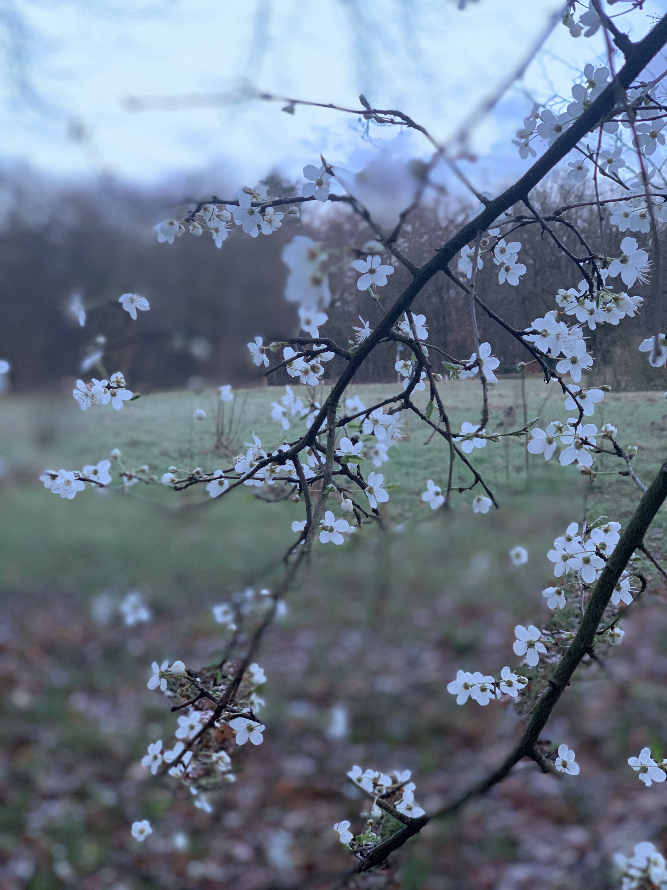

Only when Compassion is present people will allow themselves to see the truth - Almas
Als eigenaresse van drie praktijken in Arnhem hield ik lange tijd mijn hoofd maar net boven water. ...
Alleen met het hart kun je goed zien, het wezenlijke is voor de ogen onzichtbaar. - Antoine de Saint-Exupér

Mijn benadering zit op de laag van de essentie, niet enkel op de verandering van gedrag. ...
Vertel me iets en het waait door me heen. Laat het me zien en ik weet het morgen nog. Laat het me voelen en ik weet het mijn hele leven. - Lao Tse
Neem gerust contact op voor een kennismaking.
Safety is not the absence of a threat but the présence of connection - Steven W. Porges